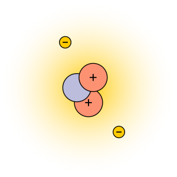
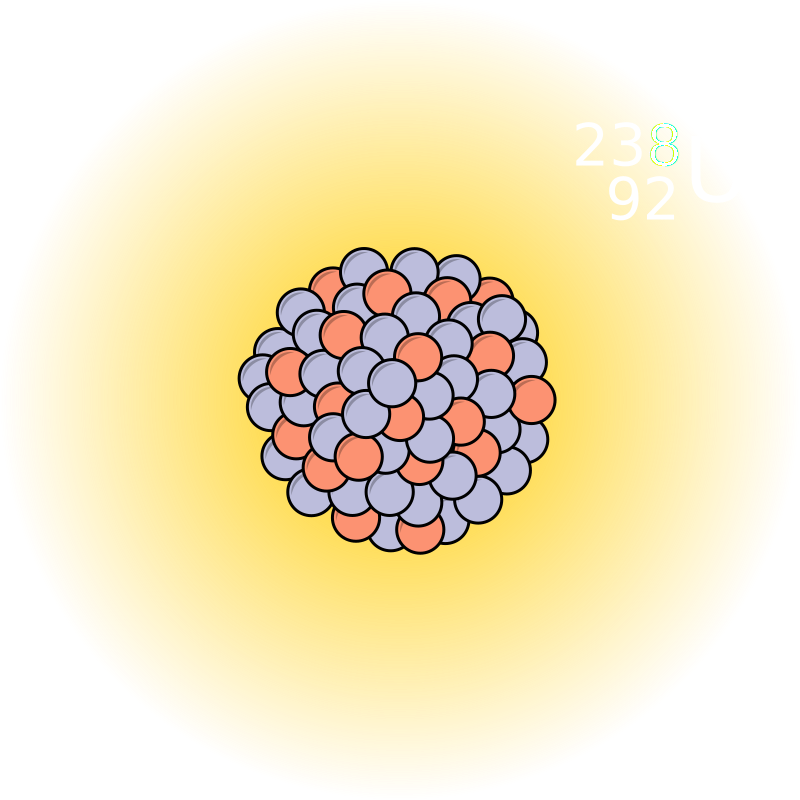
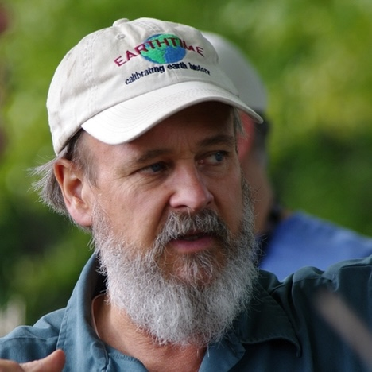

Big science and industries of violence
Graham H. Edwards
Earth & Environmental Geosciences
Axioms for our discussion of ethics
- We want science to improve the quality of human life.
- Civilian mass casulaties are bad.
- Humans (including scientists) have agency.
Caution
Similar to the assigned readings, you may find some aspects of our discussion unsettling.Look after yourself/selves, as needed.
How I got here…
isotope geochemistry & geochronology
Isotopes
Atoms of the same element with different masses.
| particle | charge |
|---|---|
| proton | + |
| electron | − |
| neutron | ○ |
 $$^4_2\text{He}$$
$$^4_2\text{He}$$Isotopes
$$^3_2\text{He}$$
$$^4_2\text{He}$$
Telling time with radioactive isotopes
Uranium-238
The uranium decay series

Uranium-lead (U-Pb) and U-series chronometers
Mass spectrometry

X62 thermal ionization mass spectrometer — Keck Isotope Facility, University of California Santa Cruz
Tempo & process of planetary formation and ice sheet life cycles

Image credit: NASA/JPL

Image credit: GHE
My academic lineage
Mark Ingrham
University of Chicago
George Wetherill
Carnegie Institution of Washington

Randy Van Schmus
The University of Kansas

Samuel Bowring
Massachusetts Institute of Technology
Terrence Blackburn
University of California Santa Cruz

Graham Edwards
Trinity University
Foundational isotope geochemists, Manhattan Project scientists
Mark Ingrham

Clair Patterson
Image credits: U. Chicago, Caltech
The Manhattan Project

- Research and development of nuclear weapons
- Formally active 1942–1946
- Big Science
- Multi-national collaboration (USA, UK, CA)
- $2 billion budget (∼30B today)
- Origins in the Einstein-Szilard letter (1939):
- Nazi uranium stockpiling
- Building a bomb?
The Trinity Shot
1945
Culmination of the Manhattan Project
- U.S. detonates nuclear bombs over Hiroshima (6 August 1945) and Nagasaki (9 August 1945).
- 150,000–246,000 casualties from blasts, burns, injuries, and acute radiation poisoning.
Nagasaki before and after bombing, Wikimedia

Atoms for Peace Initiative (1953)
- Cold War nuclear proliferation
- Mutually Assured Destruction
- First commercial nuclear power plant in 1957
- 91 online today
- 1,000→30,000 nuclear weapons (1953–1960s)
- Operation Plowshare (1958)
- civil engineering projects
- 35 detonations (1961–73)
The Manhattan Project & “Atoms for Peace” through time…
 1946–1975
1946–1975
 1977→
1977→
Rockets


What do you think?
Nuclear power
The current contribution of nuclear energy to climate change mitigation is small and, according to current planning, will stay at this level in the near-to mid term future. Nuclear expansion strategies are not feasible due to resource limitations. New nuclear technologies without those limitations will not be ready in the critical time frame 2020 to 2050… But given the limited contribution to climate mitigation,complete phase out is a feasible option as well.
Muellner et al., 2021. "Nuclear energy - The solution to climate change?" Energy Policy 155. doi:10.1016/j.enpol.2021.112363
Political destabilization for unstable nuclei
(and other trace metals)
Democratic Republic of the Congo

- Colonized by Belgium in 1879
- Violent colonial exploitation
- Independence on 30 June 1960
- Katanga province cedes from the newly formed Republic of the Congo, backed by Belgian military and a mining company.
Uranium deposits
Belgian-owned Union Minière du Haut-Katanga held the Shinkolobwe uranium and radium mine (Manhattan Project supplier) in the south of Katanga province.

Schoepite/Curite/Uraninite, Mindat
Patrice Lumumba
First democratically elected prime minister of the Democratic Republic of Congo (1960)

Overthrow of democracy
- U.S.- and Belgian-backed assassination of Lumumba
- Gradual consolidation of power to (Joseph) Mobutu
- Mobutu ruled as a dictator from 1965–1997

U.S. Secretary of Defense Caspar W. Weinberger and President Mobutu (1983), U.S. Department of Defense
Political instability in the DRC today…
Ongoing violence among militia groups and government over high-demand mineral resources for high-demand technologies.


{kind=link}
{kind=link}
{kind=link}
What are our ethical responsibilities as consumers?
What are the responsibilities of scientists, engineers?
Big Science, today…
Following the money
Higher education Research & Development (R&D) expenditures
Data from: National Center for Science and Engineering Statistics (NCSES) (FY 2023)
Federally financed higher education R&D expenditures
| Agency | Total annual | (Trinity U.) |
|---|---|---|
| Health & Human Services | $33,097,927,000 | $1,182,000 |
| Dept. of Defense | $9,047,729,000 | — |
| Natl. Science Foundation | $6,699,546,000 | $811,000 |
| Dept. of Energy | $2,671,326,000 | — |
| NASA | $2,295,593,000 | $9,000 |
| Dept. of Agriculture | $1,700,216,000 | $71,000 |
Data from: National Center for Science and Engineering Statistics (NCSES) (FY 2023)
Are scientists responsible for or complicit in the consequences of their reserach?
Can/should scientists set expectations for agencies they receive funding from?
What should science be used for?
What are our ethical responsibilities and obligations as human beings?
Artificial intelligence
Artificial intelligence
…in the defense sector
OpenAI wins $200m contract with US military for ‘warfighting’
[Guardian, June 2025]- $98.9 million contract between U.S. Army and TurbineOne for battlefield decision-making [WSJ, Sept 2025]